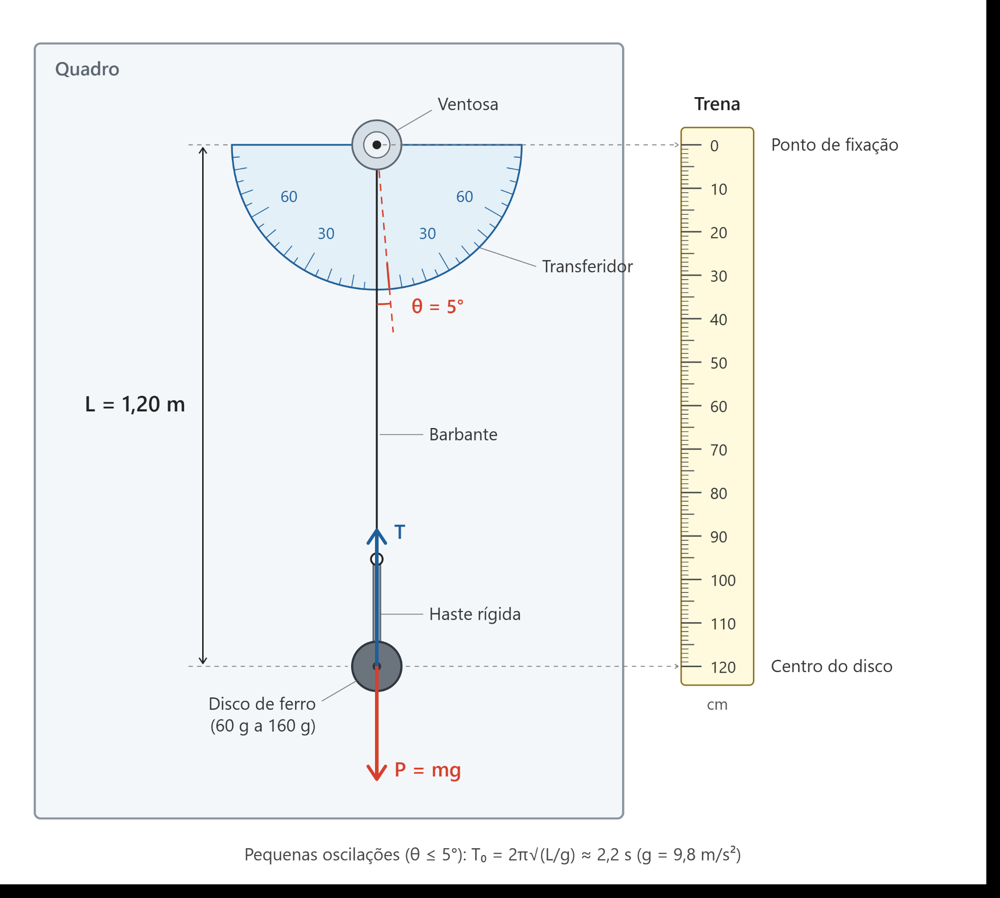
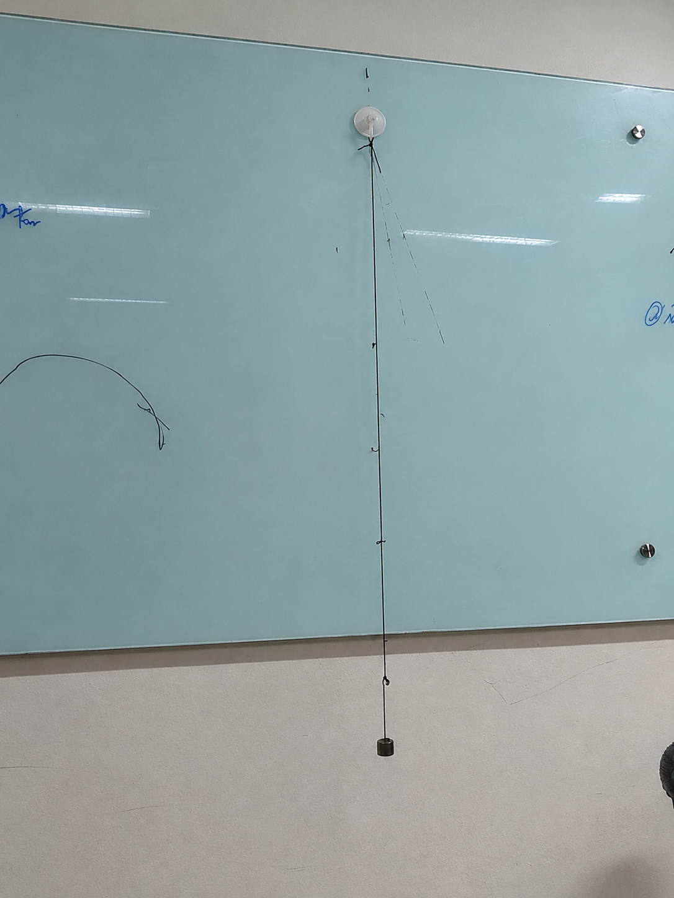
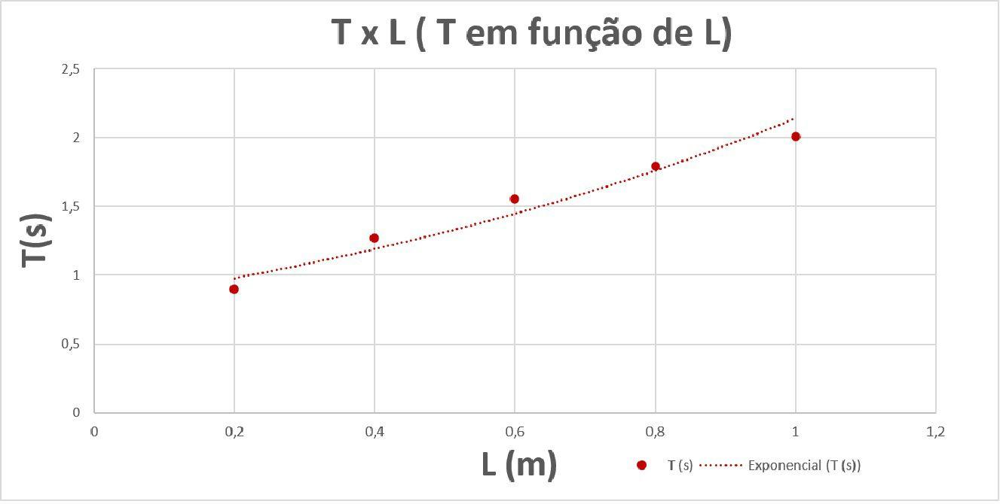
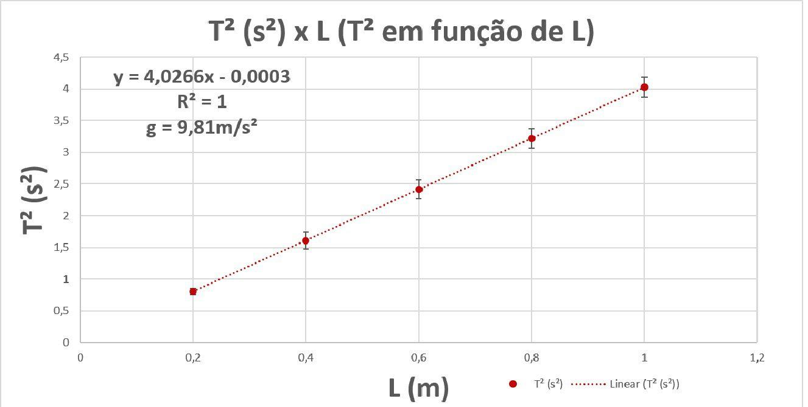
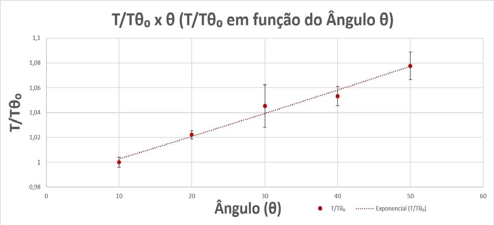

Comprimento e período
Na série de 0,20 m a 1,00 m, o período informado aumenta de 0,896 s para 2,006 s. A relação T² × L é aproximadamente linear, como prevê T² = (4π²/g)L.
O período de oscilação de um pêndulo simples e a determinação da aceleração da gravidade.
Quanto maior o fio, maior o período. A inclinação de T² × L fornece uma estimativa experimental de g.
Uma massa de prova presa por barbante a um suporte fixo. O comprimento foi medido até o centro da massa e o ângulo inicial controlado com um transferidor.


Anilhas de ferro, barbante, ventosa, haste metálica, régua e transferidor.
Soltar a massa sem impulso e medir o tempo de dez oscilações completas.
Cinco tomadas de tempo para cada condição experimental.
Tempos registrados para dez oscilações e períodos calculados dividindo a média por dez. Os valores abaixo reproduzem as tabelas do relatório.
Massa indicada de 60 g · ângulo inicial de 5° · cinco medidas de tempo por comprimento.
| L (m) | tA (s) | tB (s) | tC (s) | tD (s) | tE (s) | Média t₁₀ (s) | Δt (s) | T (s) | T² (s²) |
|---|---|---|---|---|---|---|---|---|---|
| 0,20 | 8,82 | 9,12 | 8,88 | 9,05 | 8,95 | 8,96 | 0,150 | 0,896 | 0,804 |
| 0,40 | 12,52 | 12,85 | 12,60 | 12,78 | 12,69 | 12,68 | 0,165 | 1,269 | 1,610 |
| 0,60 | 15,35 | 15,72 | 15,48 | 15,65 | 15,52 | 15,53 | 0,185 | 1,554 | 2,416 |
| 0,80 | 17,75 | 18,12 | 17,85 | 18,06 | 17,92 | 17,94 | 0,185 | 1,794 | 3,219 |
| 1,00 | 19,85 | 20,25 | 19,98 | 20,18 | 20,04 | 20,06 | 0,200 | 2,006 | 4,024 |
Δt = (t máximo − t mínimo) / 2 · T = média de t₁₀ / 10
Comprimento indicado de 1,00 m · ângulo inicial de 10°.
| Massa | tA (s) | tB (s) | tC (s) | tD (s) | tE (s) | T informado (s) | ΔT (s) |
|---|---|---|---|---|---|---|---|
| 80 g | 19,36 | 19,32 | 19,33 | 19,31 | 19,30 | 1,932 | ± 0,003 |
| 100 g | 19,42 | 19,47 | 19,52 | 19,56 | 19,46 | 1,949 | ± 0,007 |
| 120 g | 19,56 | 19,59 | 19,60 | 19,60 | 19,58 | 1,960 | ± 0,005 |
| 140 g | 19,66 | 19,70 | 19,69 | 19,72 | 19,72 | 1,969 | ± 0,003 |
| 160 g | 19,75 | 19,65 | 19,74 | 19,79 | 19,69 | 1,972 | ± 0,007 |
Comprimento indicado de 1,00 m · massa indicada de 60 g.
| Ângulo | θ (rad) | tA (s) | tB (s) | tC (s) | tD (s) | tE (s) | T (s) | T/T₀ exp. | T/T₀ teórica |
|---|---|---|---|---|---|---|---|---|---|
| 10° | 0,175 | 19,23 | 19,36 | 19,30 | 19,20 | 19,33 | 1,928 | 1,002 | 1,0019 |
| 20° | 0,349 | 19,62 | 19,70 | 19,74 | 19,74 | 19,71 | 1,971 | 1,024 | 1,0076 |
| 30° | 0,524 | 19,94 | 20,00 | 20,12 | 20,60 | 20,12 | 2,016 | 1,047 | 1,0172 |
| 40° | 0,698 | 20,28 | 20,50 | 20,20 | 20,30 | 20,29 | 2,031 | 1,055 | 1,0305 |
| 50° | 0,873 | 21,10 | 20,69 | 20,74 | 20,67 | 20,70 | 2,078 | 1,080 | 1,0476 |
A tabela original apresenta T/T₀ e a correção teórica 1 + θ₀²/16.
Gráficos reproduzidos das páginas de análise do relatório original. Cada um destaca uma variável diferente do movimento.



A interpretação combina o modelo de pequenas oscilações com as tendências medidas pelo grupo, sem perder de vista as limitações do procedimento.
Na série de 0,20 m a 1,00 m, o período informado aumenta de 0,896 s para 2,006 s. A relação T² × L é aproximadamente linear, como prevê T² = (4π²/g)L.
O ajuste do gráfico fornece inclinação 4,0266 s²/m. Usando g = 4π² / inclinação, o relatório apresenta g ≈ 9,81 m/s², próximo ao valor esperado na superfície terrestre.
Os períodos listados para 80 g a 160 g ficam entre 1,932 s e 1,972 s. A série sugere variação pequena, mas deve ser interpretada junto às incertezas e à inconsistência apontada abaixo.
O período cresce de 1,928 s em 10° para 2,078 s em 50°. Isso mostra o desvio do modelo de pequenos ângulos quando a amplitude aumenta; o grupo limitou a coleta a 50° após problemas de colisão a 60°.
*Variação calculada com os períodos tabulados para 10° e 50°: (2,078 / 1,928 − 1) × 100.
A experiência confirmou a tendência prevista entre comprimento e período, produziu uma estimativa de gravidade próxima de 9,81 m/s² e mostrou que amplitudes maiores afastam o pêndulo do regime harmônico simples ideal.
← Voltar à introdução